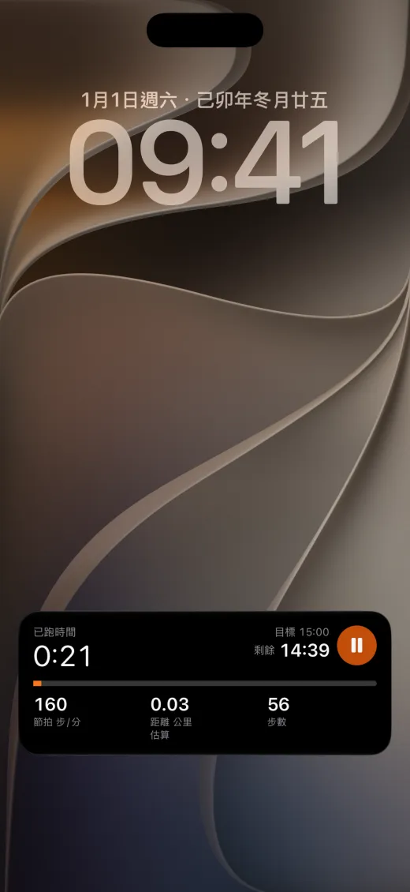
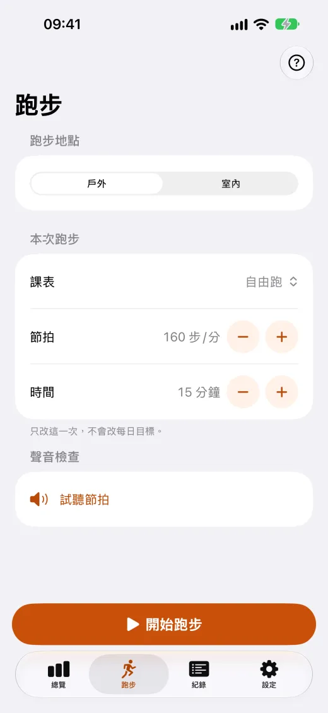
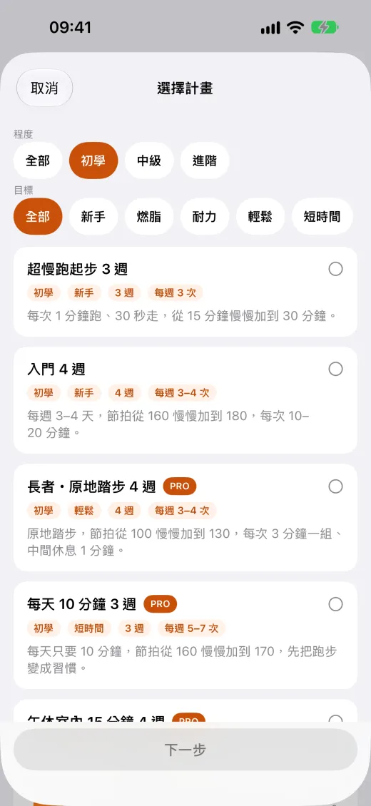
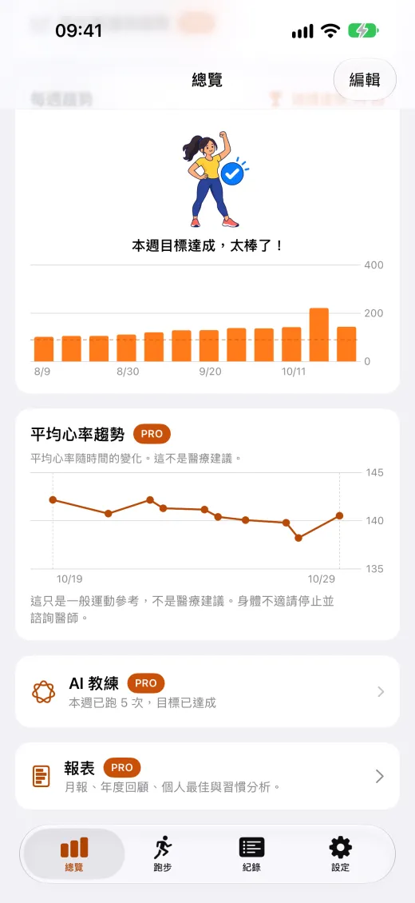

節拍器
160–180 步/分，聲音與手腕震動，鎖定畫面也不中斷。

課表與計畫
免費的 4 週入門計畫，分段課表自動換段提示。

Apple Watch
直接在手錶上開始跑步，心率上限提醒。

健康資料留在你的裝置
不用註冊帳號，健康資料不上傳、也不用於廣告。
實際畫面




免費與 Pro
Pro 是一次購買、永久使用、支援家人共享，不是訂閱。
免費
- 節拍器：160–180 步/分，聲音或手腕震動，鎖定畫面也能繼續
- 跑步計畫：超慢跑起步 3 週、入門 4 週
- 分段課表：免費 1 組自訂與 2 個入門範本
- Apple Watch 版：直接在手錶上開始跑步
- 鎖定畫面、動態島與小工具即時顯示進度
Pro
- 課表庫全部 10 種課表，以及不限數量的自訂課表
- 更多跑步計畫：9 週連續 30 分鐘、每週 150 分鐘、進階 300 分鐘
- 跑步數據與趨勢、月報與年度回顧、CSV / PDF 匯出
- iCloud 同步：換手機也不會遺失紀錄
- 移除紀錄頁廣告